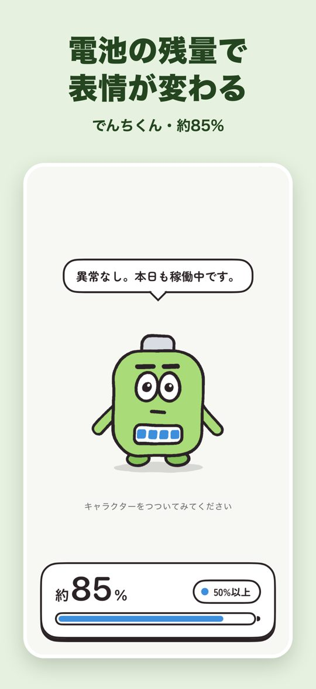
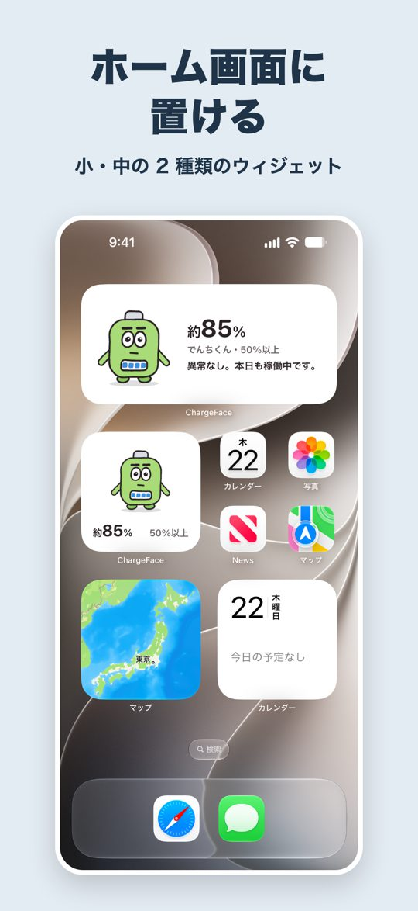
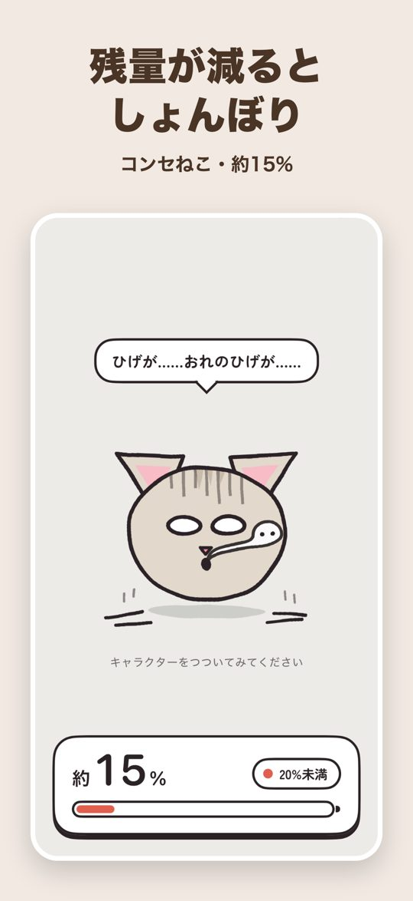
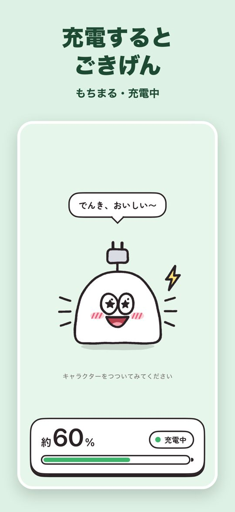
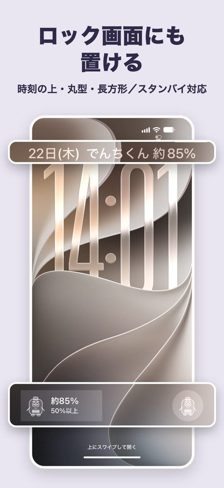
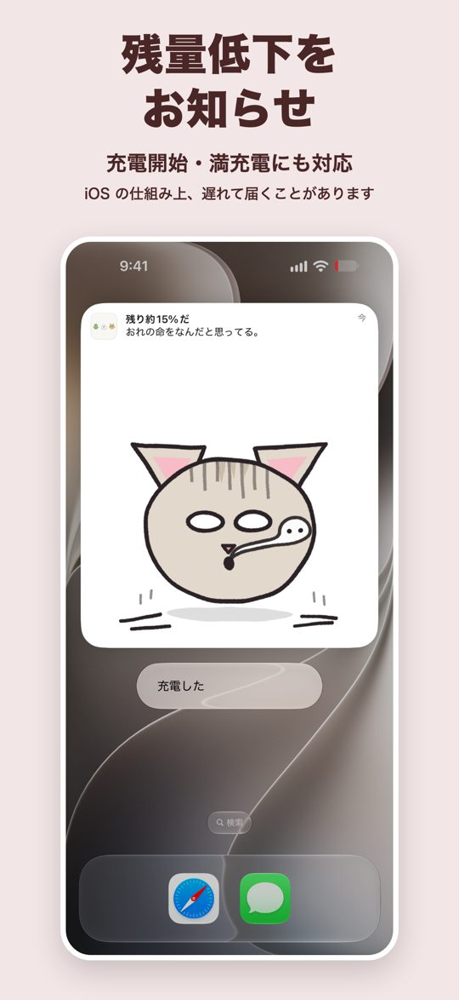
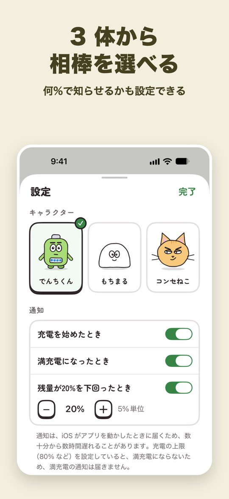

表情が変わる、バッテリー残量ウィジェット
ChargeFace は、iPhone のバッテリー（電池）の残量と充電の状態に合わせて、キャラクターの表情が変わるアプリです。残量が減るとしょんぼり、充電するとごきげん。ホーム画面やロック画面に置けば、残量がひと目で分かります。
App Store で無料ダウンロード対応：iPhone（iOS 17.0 以降）／日本語のみ







3 体のキャラクター
でんちくん：真面目な乾電池。業務連絡の口調で残量を報告します。
もちまる：のんびりしたおもち。残量が減ると焼けて膨らみ、充電中は頭から芽が出ます。
コンセねこ：口の悪いねこ。残量が 20% を切ると、ひげが床に落ちます。
できること
- ホーム画面（小・中）、ロック画面（3 種類）、スタンバイのウィジェットで、残量とキャラクターの表情がひと目で分かります。
- 充電の開始、満充電、残量の低下（5〜50% で設定）を、キャラクターの絵が付いた通知でお知らせします。ショートカット App などの設定は要りません。お知らせは、iOS の仕組み上、数十分から数時間遅れることがあります。
- アプリの画面でキャラクターをつつくと、場面ごとに違うせりふで反応します。
ご利用にあたって
- 無料でお使いいただけます。アカウントの登録は不要で、電池の情報は端末の外に送信しません。
- キャラクターがときどき広告を見てほしいとお願いしますが、「また今度」で断れます。広告は、「広告を見る」などのボタンを押したときだけ流れる動画です。
- 開発を応援するカンパ（任意の App 内課金）があります。カンパをしても、機能は変わりません。
- ウィジェットの更新も、iOS の仕組み上、遅れることがあります（通常は 1 時間ほどで追いつきます）。アプリを開くと、すぐに最新の状態になります。
- 低電力モードの間や、設定 App の「Appのバックグラウンド更新」がオフのときは、お知らせが届かないことがあります。
- 充電の上限（80% など）を設定しているときは、満充電のお知らせは届きません。充電器をつないですぐに外すと、充電を始めたときのお知らせが届かないことがあります。詳しくはサポートをご覧ください。